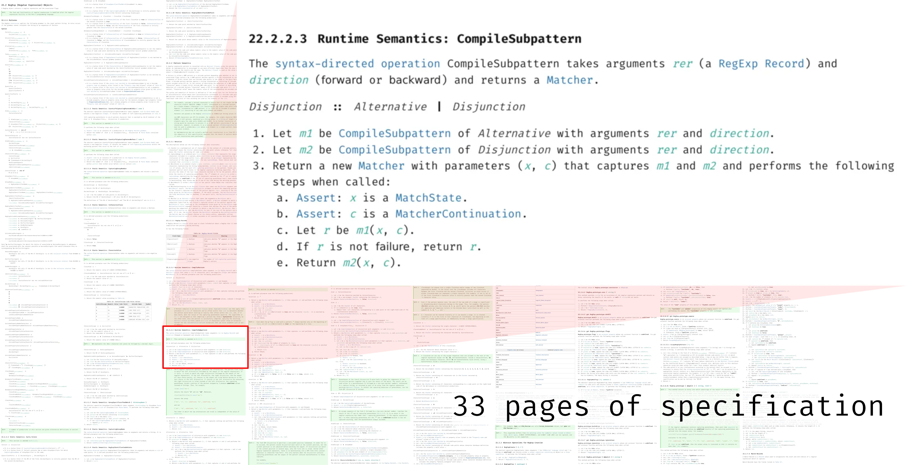

Background: Modern regexes are surprisingly complex
1960s
\(\neq\)
2024
\[\begin{alignat*}{3}
r\ {:}{:}{=}&\;\; a \;\;
&&|\;\; \varepsilon \;\;
&&|\;\; r_1r_2 \\
|&\;\; r_1 | r_2 \;\;
&&|\;\; r_1^ {*}
\end{alignat*}\]
\(\subsetneqq\)
- Capturing groups
(r) - Lookaheads
(?=r) - Lookbehinds
(?<=r) - Negative lookaheads
(?!r) - Negative lookbehinds
(?<!r) - Backreferences
\1 - ...
Growing feature set
\[
\gdef\tmatch#1#2{ #1\ \vdash\ #2 }
\begin{gather*}
\frac{\tmatch{r_1}{v}}{\tmatch{r_1 | r_2}{v}} \quad
\frac{\tmatch{r_2}{w}}{\tmatch{r_1 | r_2}{w}}
\end{gather*}
\]
\(\neq\)

Increasingly subtle semantics
let rec matches s = function
| Or (l, r) -> matches l s || matches r s
| ... -> ...\(\neq\)
- State-of-the-art implementations are complex:
Irregexp: >20k LoC
- Existing models are incomplete or wrong:
r? ≢ r|\(ε\) - State-of-the-art implementations have bugs:
/(a?b??)*/.exec('ab') ≢ ['a','a']